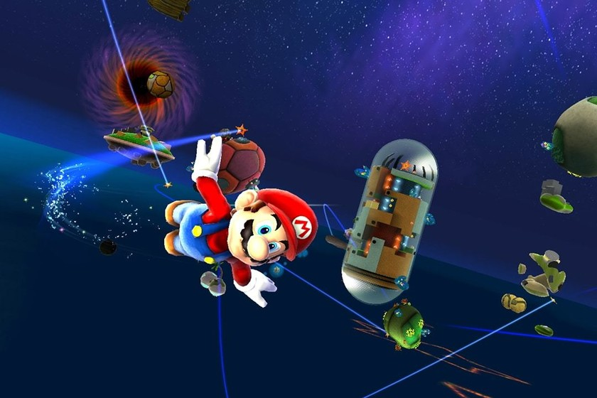

Contenido Beta / E3

Diseños tempranos
En versiones beta mostradas en el E3, Mario tenía animaciones ligeramente diferentes y físicas menos pulidas. El movimiento en planetas pequeños aún estaba en desarrollo.

Planetas descartados
Hay muchos planetas descartados por falta de tiempo o por no encajar con la visión final del juego. Algunos tenían mecánicas únicas que no se implementaron. Pero la mas importante y la que mas se queria ver era el planeta de la fortaleza starman,pero fue descartado por falta de tiempo, y por no encajar con la vision final del juego.

Interfaz diferente
La interfaz del juego en el E3 era más simple y con menos efectos, el mayor ejemplo de estoe ra en el medidor de vida que primero paso de ser 8 a final mente 3 como a dia de hoy debido a que Miyamoto le queria poner mas dificultad al juego para que fuera accesible para todo tipo de personas pero que haya una minima dificultad.
Enemigos eliminados
Algunos enemigos vistos en versiones tempranas fueron eliminados o rediseñados completamente antes del lanzamiento oficial.